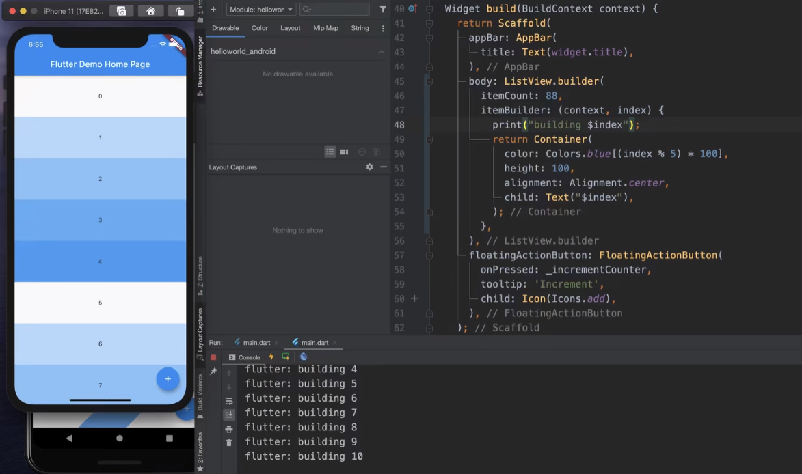
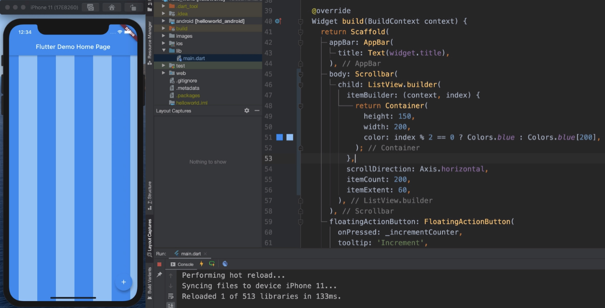

滚动列表与动态加载
ListView 所有子控件一次直接渲染
开发中常见的就是超出屏幕后提示Overflowing 像素超出屏幕了。这时最简单的办法就是外层控件换成ListView，这样就能上下滚动了。
ListView.builder 按需加载
如果控件比较多肯定不可能一次直接加载所有元素。这时就用到了ListView.builder,可以实现类似UITableView按需加载的效果。
如果itemCount 不设置即为null的时候，是无限加载，如果itemCount 设置了大小就是加载到固定项数。
...
ListView.builder(
itemCount: 88,// 不设置就是无限加载，设置就加载该值的数量。
itemBuilder:(content,index){
print("building $index"); // 打印当前在画的视图
return Container(
color: Colors.blue[(index%5)*100],
height:100,
alignment: Alignment.center,
child: Text("$index"),
);
}
);
如上图，就会打印出当前正在渲染第几个。

如果想要改变缓冲区大小可以设置cacheExtent参数
...
ListView.builder(
itemCount: 100,// 不设置就是无限加载，设置就加载该值的数量。
cacheExtent: 2000, // 缓冲区大小，逻辑像素为单位，如果设置为0即不想要缓冲，只加载渲染屏幕正在显示的组件
itemBuilder:(content,index){
print("building $index"); // 打印当前在画的视图
return Container(
color: Colors.blue[(index%5)*100],
height:100,
alignment: Alignment.center,
child: Text("$index"),
);
}
);
ListView.separated 分割线
基本用法和ListView.builder一样，只不过添加了separatorBuilder
ListView.separated(
itemCount:6,
separatorBuilder: (content,index){
return Divider(thickness: 2); //thickness 设置分割线粗细
},
);
ListView 性能问题
设置itemExtent
如果每个item大小不一，这样在滑动ScrollBar的时候就会把所有中间位置的item都加载，加载速度会变慢，很耗性能。
ListView中有一个参数itemExtent，这个参数设置每一个item的固定大小，即使item Builder中的item有大小也会强制设置为itemExtent的值（主轴方向）。

由上图也能看出，设置itemExtent后，主轴方向的大小就是itemExtent设置的值，不设置就是视图自己的值。交叉轴方向是要占满ListView的宽度/高度。
设置padding
给ListView设置padding有三种方式
-
给ListView外面加padding
... Padding( padding: const EdgeInsets.all(40), child: ListView.builder( ... ), ), ...这种方式也就固定了ListView的视图padding
-
给item添加padding
... ListView.builder( itemBuilder:(content,index){ return Padding( padding: EdgeInsets.symmetric(horizontal: 80),// 水平左右80 child: Container( height:80, width: 80, color: Colors.blue, ), ); }, ),这种方式是给每一个item添加padding
-
设置padding属性。
... ListView.builder( padding: const EdgeInsets.all(33.0), itemBuilder: ... ), ...这种方式能看到左右的交叉轴方向立即显示padding对应的大小，而主轴方向则显示类似为iOS 中Scroll View中的scrollOfSet
设置controller
ListView中有一个属性是controller，我们可以给ListView设置controller，从而设置List View滚动相关的控制.
...
final _controller = ScrollController();
...
return Scaffold(
appBar: AppBar(
title: GestureDetector(
onTap:() {
//_controller.jumpTo(0.0);// 跳转到第一
_controller.animateTo(-20,duration:Duration(seconds:1),curve:Curves.linear,);// 动画跳转，设置为负像素能超出范围然后反弹，持续时间1s，线性动画
},
child: Text("ListView Demo"),
),
),
);
我们也可以通过_controller.offSet知道目前的位置（逻辑像素）
设置physics
像安卓一样的效果，可以设置为
ClampingScrollPhysics
像iOS一样的效果，可以设置为
BouncingScrollPhysics
不能滚动
NeverScrollableScrollPhysics